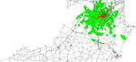

|  |
Gridlock_Norfolk_Copy |
This basic traffic model explores how agents travel through Norfolk. The idea is that if you increased the number of agents (people) more congestion will arise. To some extent this is similar to the GeoMason sim.app.geo.campusworld example. The model demonstrates how you can make agents move along networks (in this case road lines in the form of ESRI shapefiles) from their origin to their destination via a shortest path algorithm (A*).